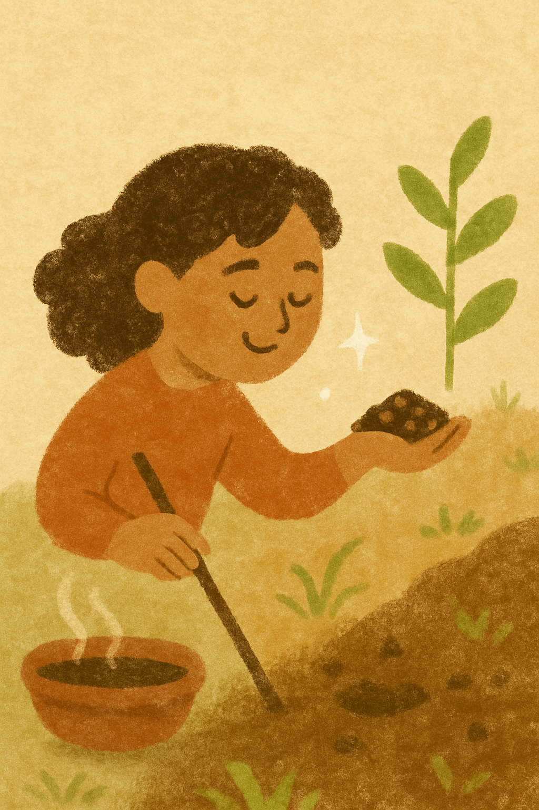

Ajji's Courtyard Adventures
Step into a world of mud pies, games, seeds & stories – just like Ajji’s good old days. Craft, plant & play the natural way with guided activities rooted in tradition and wonder.

What You'll Experience
🧶
Mud & Makers
Hands-on clay and mud play encouraging sensory exploration, simple sculpting and cooperative building.
🌱
Seed Planting
Plant seeds in small pots and learn about growth, care, and cycles of nature — children take a sapling home.
📚
Stories with Ajji
Story circles with folk tales, songs and simple rhymes that connect children to cultural memory.
🎨
Craft & Play
Nature-inspired craft sessions using grains, leaves and safe materials to create keepsakes.
Practical Info
- Age group: 4–12 years
- Timing: Weekend sessions, 60–90 minutes
- Fee: Rs 500 per child
- What to bring: Sun hat, water bottle, a change of clothes